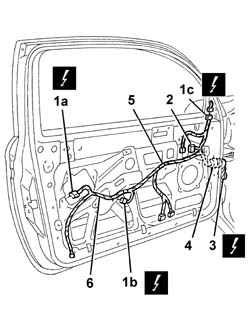

5505B10 front door wiring - r r
- Path
- Procedures > 55 ELECTRICAL EQUIPMENT > 5505 ELECTRICAL CIRCUIT FOR INSTRUMENTS/INDICATORS > 5505B door,boot and bonnet wiring. > 5505B10 front door wiring - r r
- Kind
- repair procedure (removal / refitting; the operation number is the code)
- Applies to
- all engines; all production periods
- Interactive page
- https://sloeber94.github.io/elrnDB-a147/en/#/3025487
Applies to: all engines; all production periods
 Removing
Removing
 Refitting
Refitting7005D21 front door window front guide - r r
7005E12 corner cover of one front side door, lh or rh r r
1. Disconnect the electrical connections from the door lock (1a), the electric windows motor (1b) and the rear view mirror (1c).
 | Name | Connector |
|---|---|---|
1a | .Front driver's door lock geared motor |
| Name | Connector |
|---|---|---|
1a | Passenger side front door lock geared motor |
| Name | Connector |
|---|---|---|
1b | Front driver's electric window motor |
| Name | Connector |
|---|---|---|
1b | Front passenger side electric window motor |
| Name | Connector |
|---|---|---|
1c | Driver's external rear view mirror |
| Name | Connector |
|---|---|---|
1c | Exterior passenger side rear view mirror |
2. Disconnect the short circuit coupling from the structure.
3. Disconnect the door wiring electrical connection.
| Name | Connector |
|---|---|---|
3 | Rear coupling for /front door. driver's side |
| Name | Connector |
|---|---|---|
3 | /Front passenger door. rear coupling |
4. Disconnect the connector from the door frame (bayonet fitting).
5. Release the door wiring retainers from the frame.
6. Remove the wiring from the door frame.

Applies to: all engines; all production periods
Refitting
RemovingCheck that the wiring is undamaged and that the individual conductors are firmly attached to the connections.
Check that the connections are fitted with anti-slip devices (secondary lock).
If necessary, check the continuity.
Position the wiring in its housing in the door frame.
Secure the cable loom to the door frame using the retainers.
Connect the connector to the door frame (bayonet fitting).
Connect the short circuit coupling to the structure.
Connect the electrical connection.
Check the operation of the electrical components connected.
Topics linked from this page (10)
- 7005D21 front door window front guide - r r
- 7005E12 corner cover of one front side door, lh or rh r r
- D30 Rear coupling for /front door. driver's side
- D31 /Front passenger door. rear coupling
- N50 .Front driver's door lock geared motor
- N51 Passenger side front door lock geared motor
- N60 Front driver's electric window motor
- N61 Front passenger side electric window motor
- P60 Driver's external rear view mirror
- P61 Exterior passenger side rear view mirror